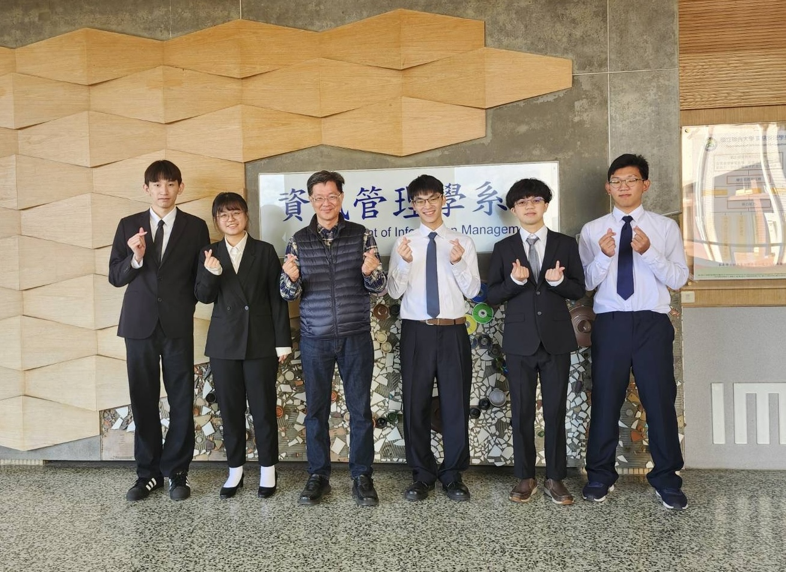
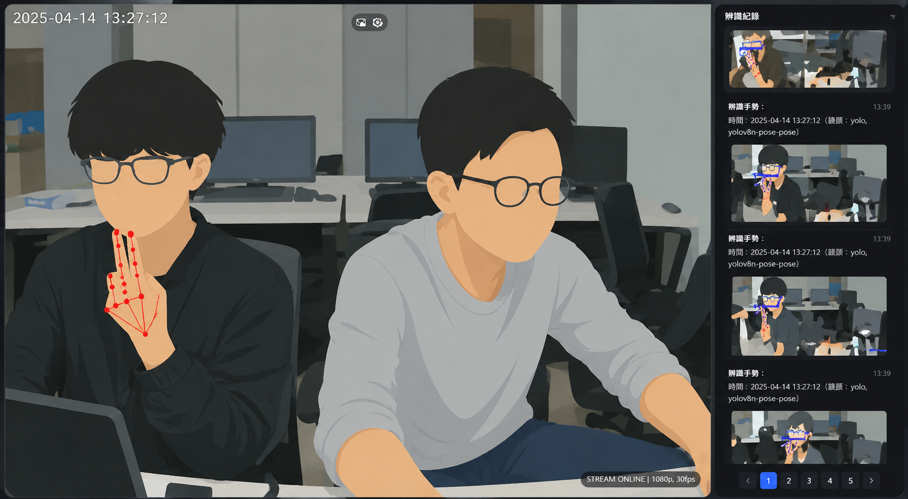
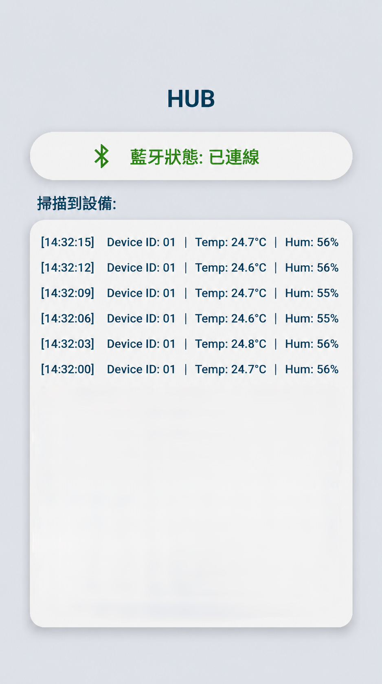
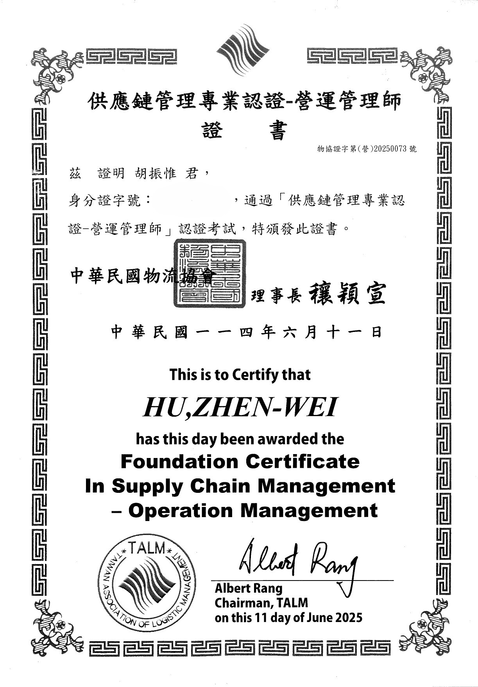
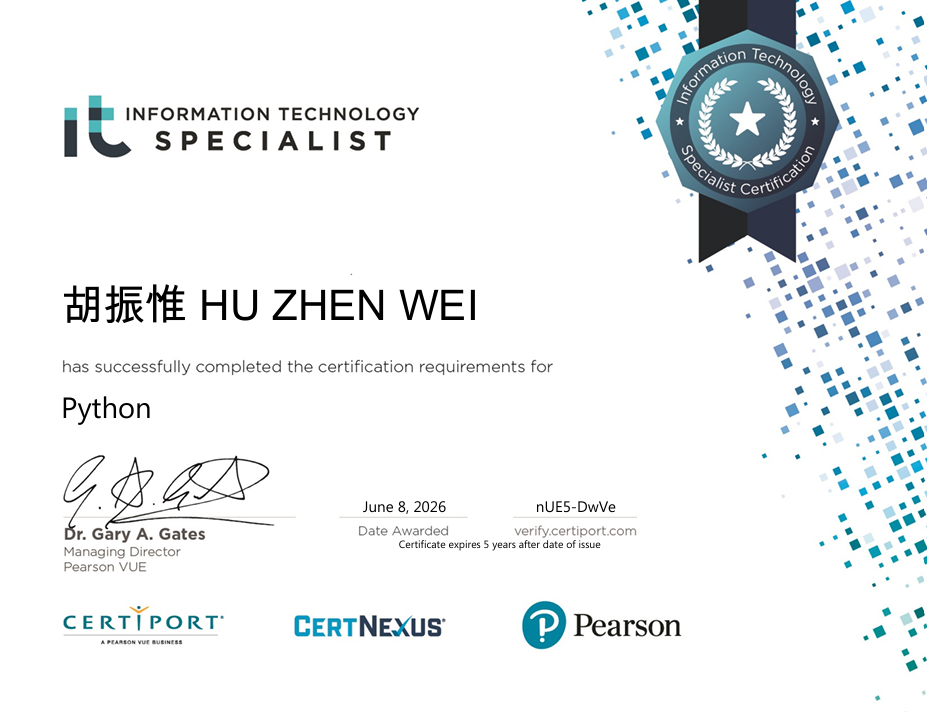

活動 Activities

工業管理與科技產業學術研討會論文發表

您好！我是胡振惟，目前就讀於國立聯合大學資訊管理學系。在大學期間，我除了學習程式設計、資料庫、系統分析等專業課程外，也透過專題製作與自主學習持續精進自身的實務能力。
在專題與實作課程中，我曾參與系統開發與專案實作，內容涵蓋 Android 應用程式開發、藍牙通訊及影像辨識等領域，逐步累積程式設計、系統分析與系統整合的實務經驗，也讓我更熟悉從需求分析到系統完成的完整開發流程。
我相信技術的價值在於解決問題，因此我持續學習新技術並挑戰不同類型的專案，不論是前端介面設計或是後端邏輯整合，都希望能提升系統的完整性與使用體驗。未來也期望能進一步接觸更多實務開發情境，強化我的專案開發能力與架構設計思維。
這個網站記錄了我的學習歷程、專案作品與成長軌跡，歡迎您一起探索我的資訊世界！
Hello! My name is Zhen-Wei Hu, and I am currently studying in the Dept. of Information Management at National United University. During my university studies, in addition to learning professional courses such as programming, databases, and systems analysis, I have also continuously improved my practical abilities through project development and self-directed learning. In my project and practical courses, I have participated in system development and project implementation, covering areas such as Android application development, Bluetooth communication, and image recognition. Through these experiences, I have gradually built up practical skills in programming, systems analysis, and system integration, and have become more familiar with the complete development process from requirement analysis to system completion. I believe that the value of technology lies in solving real-world problems. Therefore, I continue to learn new technologies and challenge different types of projects. Whether it is front-end interface design or back-end logic integration, I aim to improve system completeness and user experience. In the future, I hope to further engage in more real-world development scenarios to strengthen my project development capabilities and system architecture thinking. This website records my learning journey, project works, and personal growth. You are welcome to explore my world of information!
資訊管理學系
主修資訊系統開發與應用，涵蓋程式設計、資料庫管理與系統分析， 並結合商管知識培養跨領域整合與問題解決能力。
影像辨識系統開發、藍牙通訊資料整合與 Android 應用程式設計。
以人工智慧及影像辨識為基礎之抽菸偵測系統
主要負責 MediaPipe 影像處理模組，並協助模型整合與系統設計，參與 AI 影像辨識功能開發流程，強化影像分析與系統整合能力。
藍牙資料接收與系統整合應用
獨立設計與開發App，實作藍牙資料串流與接收模組，並設計運作邏輯，優化資料傳輸穩定性與系統流程。

運用OpenCV + YOLOv8 + MediaPipe + EfficientNet-B0 技術，開發了一套能自動判斷抽菸行為的智慧監測系統，系統會將攝影機畫面即時串流至網頁端， 讓管理人員能直接監看結果。當偵測到抽菸行為時，會同步保存影像與時間資訊，並通知管理人員。

開發藍牙資料接收應用程式，透過 Bluetooth 技術與外部裝置進行無線通訊，即時接收並顯示設備傳送的資料。 系統可用於基本資料監控與傳輸應用，並作為行動裝置與物聯網設備整合的實作基礎。

2025中華民國物流協會

2026Certiport ITS
